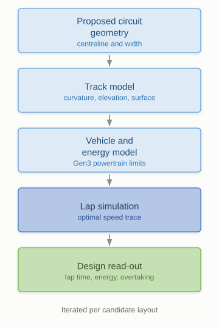

Simulation · Vehicle dynamics
Evaluating circuit layouts before any survey data exists
Formula E races on temporary street circuits. Deciding whether a proposed layout will produce a good race used to take weeks of manual analysis. It now takes about a day.
The problem
A new Formula E circuit starts as lines on a city map. Long before any survey happens, somebody has to answer whether racing on it would be safe, whether the cars could complete it on the available energy, and whether it would actually be entertaining. Those three pull against each other: a layout that is comfortably safe is often processional, and a layout that rewards overtaking is usually tight in the places that make the safety case harder.
The analysis behind that judgement was manual and slow, so fewer candidate layouts got examined properly and options were discarded on intuition instead of being tested.

What it does
The tool takes a proposed layout as geometry and works forward from there. It builds a track model, runs it against a vehicle and energy model of the car, and simulates the lap to produce the numbers the design team needs: how long a lap takes, how the energy budget plays out across a race distance, and where on the circuit a following car would have a realistic chance of getting past.
It needs only the layout geometry, so it can be used early, while the design is still cheap to change.
Why that matters
Circuit reviews that took weeks of manual work now turn around in a day, including for entirely new venues where there is no prior data. The bigger effect is that when evaluating a layout is cheap, the team compares several instead of assessing only the one proposed, including options that wouldn't previously have justified the effort.
← All projects